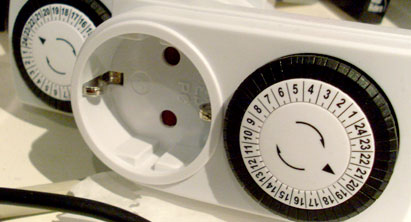

(optional.is) was started on April 1st, 02009 and has generated 24 articles so far. This omnibus is an opportunity to look back at the year’s articles and make a few additional notes and corrections about each that have appeared since their publications. This isn’t an exhaustive list, but instead, the ones that sparked further discussion or more information became available.
How dark is your data shadow?
Tantek Çelik pointed me to a term of his from back in 02004 called “memetic wake“. Definition: the collection of information, especially that which encourages its reproduction, that an object (like a person) leaves behind as a result of its physical existence (lifetime). Just as a boat as it moves across a body of water leaves behind a physical wake, an object as it exists across time leaves a memetic wake.
There have been a few other instances of this same “data shadow” idea. Bruce Schneier is a smart man and I highly recommend his blog. Specifically, he wrote about Leaking Data, in which he demonstrates how information is being leaked in unintentional ways.
It really makes you think more about the information we are creating on a daily basis. Just recently, I applied for a new passport. It will contain an RFID chip which constantly blips out data about me with no way of turning it off!
Skólapúlsinn: Educational Assessment
Skólapúlsinn is a project that we launched in 02008, and we’ve come a long way in a short time. The 02009–02010 school year has started and the system has increased in membership and in functionality. Some of the raw data that we have access too, such as break-down by scale by gender and grade we are finally exposing to the schools. Previously, schools had a single data point for each of the aspects such as; depression, anxiety and truancy, but now we have added two more data points describing boy and girls. Having a national average for a specific grade is useful, but also knowing that the boys or girls are skewing that average is important.
We have also started to implement several other new features. These include school forums so they can discuss topics with each other, as well as displaying correlation between scales. Knowing that there is a high correlation between bullying and enjoyment of reading allows schools to tackle multiple connected problems with a single focused effort. Fixing the low-hanging fruit that correlates with more difficult topics is a win for everyone.
The system has also been translated into 4 additional languages, English, Polish, Danish and Swedish. This has been an interesting exercise in the difficulties of both internationalization and localization, much of which has been overcome in a brute force manner. Having a translation of a specific text in a specific language is internationalization, but from region to region, there are certain aspects that need to be localized, such as price, units of measurement, grading scales, types of tests, this is localization. The two often get confused. With all these new changes, maybe “The school pulse” will be available in your area soon!
Finally, after receiving government funding to help develop the project further, we spent some of it on marketing and awareness in the schools. Part of this was to get some professional help with the design of the brand. The new Skólapúlsinn logo was unveiled along with a new look and feel.
Hopefully, it better conveys the project and Scandinavian minimalism, professionalism and quality. The branding conversion will take some time to move everything from the old style to the new and the transition is in progress with the help of new photography, images and brand guidelines.
The Long Now
The Long Now foundation has been putting many of their talks online for free in audio format. The Seminars About Long-term Thinking (SALT Podcast) is a great resource for learning more from people interested in sustainability and thinking for the long haul. Each of the seminars is between and hour and an hour and a half with questions. For members, you can get a video of each seminar, but for reference the audio is fine.
I listen to these every once and a while and always learn something new! Danny Hillis has a presentation which he talks more about the Clock of the Long Now and the 7 stages of a mythic journey, which I also wrote about in 02009.
Pie Charts and Other Circular Visualizations
This has been one of the more popular posts in 02009, so I wanted to revisit some of the ideas and developments. The feedback has been great, no one has disagreed about the failures of pie charts, but then, maybe these weren’t the people who needed to read the article in the first place? Given the amount of feedback and referrers, it is well worth writing more along these lines in 02010.
As part of my research after the article was published, I stumbled across this post about how to create an ASCII pie charts in MySQL. While this is an interesting programming feat, it is nearly unusable to display actual data. Not to mention the excessive extra steps when the table of data from step #1 would have sufficed.
 In the article I mention “Pie of Time” which is a GUI control to manipulate time. Since the original publication I found these wall-outlet timers. They allow you to set a time range when you want the power to be applied. It is a pretty straight forward interface, you pull-up the teeth for the half-hour increments when you want the power to flow. These are idea for lights to automatically turn on and off throughout the night saving power.
PST is the new GMT
PST is the new GMT, still gets plenty of hits from search engines. Ironically, it is from people trying to convert PST to GMT and this article appears. This further reinforces the fact that there is problems around time zone usage and that people still do not fully understand how to do this conversions even though it is just adding or subtracting a maximum of 12.
After publication, a few people pointed out that their company or institution works hard to stay on GMT. The W3C is one of those. Realizing that they are a world-wide organization, they do their best to quote times in GMT, making it easier for their members to coordinate meeting times. Hopefully others will take this into considerations and focus more on GMT times.
Twitter is a world-wide service touted as being essential in political uprisings and other important social events. Yet, their downtime is quoted in PST. Although, to their credit, it seems to have much less scheduled maintenance than previously.
But this website form has to take the cake. This company not only acknowledges that its customers won’t be in the same time zone, but then proceeds to reorganized everything based on PST.
Now, not everything needs to be GMT. The Dopplr iPhone app actually does the conversion work for you. The “people” list consists of fellow traveler and in what city they are currently. This is a useful addition, but the really slick part happens when you look at the current time. For each person in your list, it shows you the local time in their current city. This prevents you from calling too early or too late. The application automatically re-adjusted the time zones for you. Rather than displaying the offsets in your application, why not just display the adjusted time instead!
Welcome, the entire land
This post followed my presentation at the Codebits conference in Lisbon, Portugal where I unveiled the hieroglyphic translation. I think it was well received by the hackday audience—they were the kind of people who would get the joke and appreciate it. After the post went live, Mike Stenhouse alerted me to a tiny error in the text.
“L” came to the Egyptian language with the Ptolemies (Greeks, starting with Alexander the Great). … It turns up as a lion glyph. Or rather the lion was used re-appropriated to represent the “L” in the Greek kings’ names.
So when you are at the next Egyptian exhibit where you can type your name and get a hieroglyphic representation, remember that the mapping between all ASCII chars and glyphs is a later addition to the language.
What to look for in 02010
It is hard to say where exactly this site will go in the next 12 months. The publishing schedule has settled down to about 2-3 articles a month. That is dependent on various other factors, namely, how busy I am with work and other projects.
I have around 50+ articles in the drafts folder, so I’m not short on ideas, just time to flush them out to something longer and well thought out. I prefer to write longer articles that short-ones. There are plenty of other avenues for the short-form, from microblogs to lifestreams. The long-form gets overlooked on the web, so I want to try to keep it strong on (optional.is).
There are also several longer running projects that I plan to write about upon completion, such as a comparison between Kiva and MyC4 which I invested in. My experiences procrastinating on long running projects and general insights into the development and writing process which I have been knee deep in at the end of 02009. These need to wrap-up before I can write any sort of retrospective. No only does this encompass the long-form, but a long time-span to complete.
Also, doing more physical things are of interest to me. There are a few ideas for t-shirts, posters, cards and stickers in the works. Then there’s audio, North Atlantic Radio has been a side-project podcast for about as long as (optional.is) has existed. Audio is another powerful medium to tell stories, so be on the look-out for more from me in 02010.
Then, as always, there will a few surprises to write about that I don’t even know exist yet!
I hope you are enjoying everything so far. From comments on twitter, to delicious bookmarks for (optional.is), things have been positive and constructive. I’m always open to feedback and corrections, just let me know.
I have a feeling 02010 is going to be a great year!